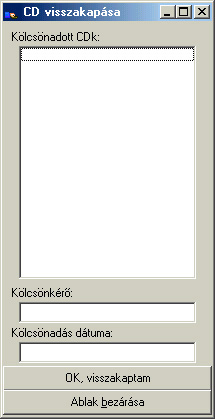

CD visszakapása
Alapértelmezett
ikonja: |
 |
| Pillanatkép: |
 |
Itt tudathatod a programmal, hogy visszakaptál egy korábban kölcsönadott CD-t. Válaszd ki a
visszakapott CD-t, és ekkor megjelenik, hogy ki és mikor kapta kölcsön, hogy behajthasd a
késedelmi díjat :). (Errõl egy "számlát" is nyomtathatsz!)
Utána kattints az "OK, visszakaptam" gombra, majd ha végeztél, a "Kész" gombbal bezárhatod
az ablakot.